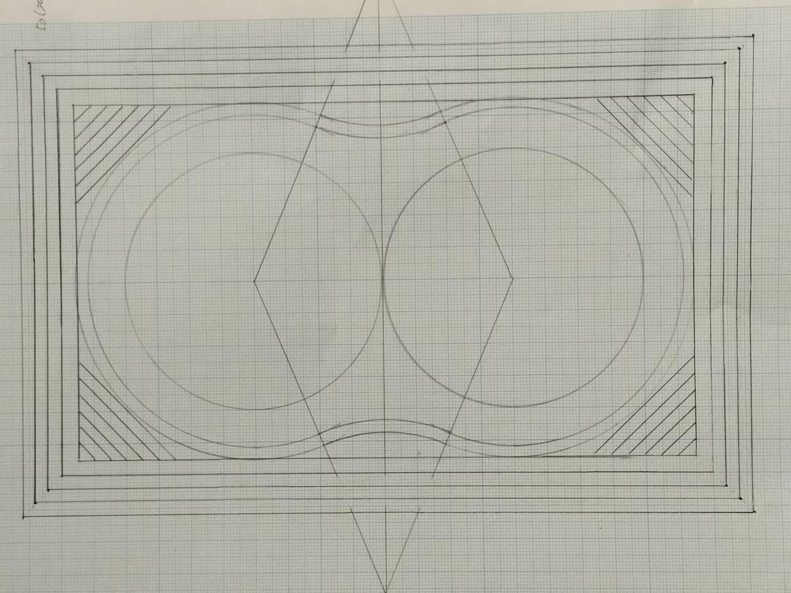
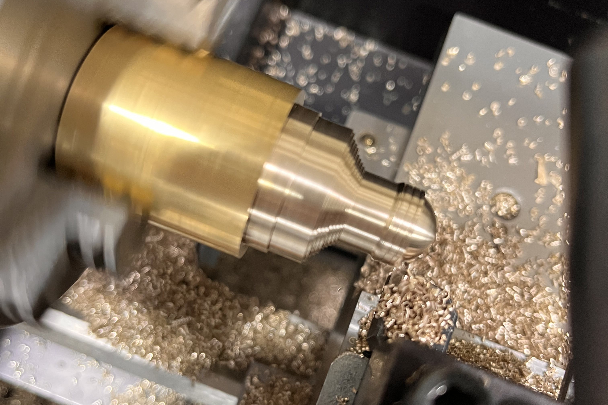

どんなことを学ぶか
基盤コースでは、将来に役立つ「考える力」「表現する力」「協力する力」を育てる学びがあります。特に、現代社会が直面するエネルギー問題や環境問題に対し、機械工学の基礎から応用までを深く学びます。具体的には、輸送機械や発電所などの産業インフラの設計・運用技術、水素・水力・風力といったクリーンエネルギーの生成・貯蔵技術、さらには微生物活用や自然再生などの環境に優しい技術を習得します。
また、自然災害の予測・解析技術や、次世代の食品・医薬品・化粧品の設計・製造技術も学び、人々の生活の質向上と環境・エネルギーとの共存を目指します。
「進取・実践・共生」という大阪高専の大切な考え方にそって学びを深めていきます。
・「進取」… 新しいことにチャレンジする
・「実践」… 学んだ知識を実際に使う
・「共生」… 周囲と協力して学ぶ
主な学びの内容
- 探究活動：金属加工や機械工学概論、CAD製図などの専門科目
- 情報活用：プログラミングやCAD設計などIT技術の応用
- 共同学習：グループでの実習や発表による学び
- 環境技術：再生可能エネルギーや自然との共存について
- 未来のものづくり：3DプリンタやCNCによる創造体験
- 社会とのつながり：企業との連携授業や課題研究
作業の様子
下の画像は実際に金属を加工する工程を示した製図です。
下の画像は実際に金属を加工している画像です。
学んで感じたこと
私はMコースに入る前までは旋盤を使って金属加工を行い、パソコンとは程遠いというイメージを持っていました。しかし、実際に学んでみると、プログラムを自分で組んで金属加工をしたり、CADを用いて橋を設計したりするなど、IT技術と融合した最先端の機械工学に触れる機会が多く、そのギャップに驚きました。
単に手を動かすだけでなく、理論と実践を結びつけ、未来の技術を創造する楽しさを日々感じています。